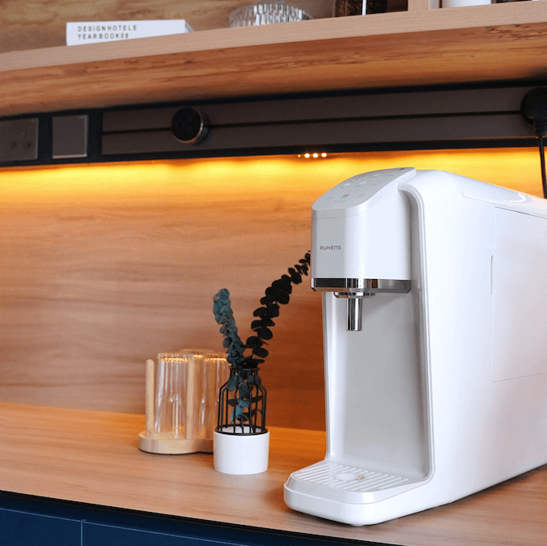
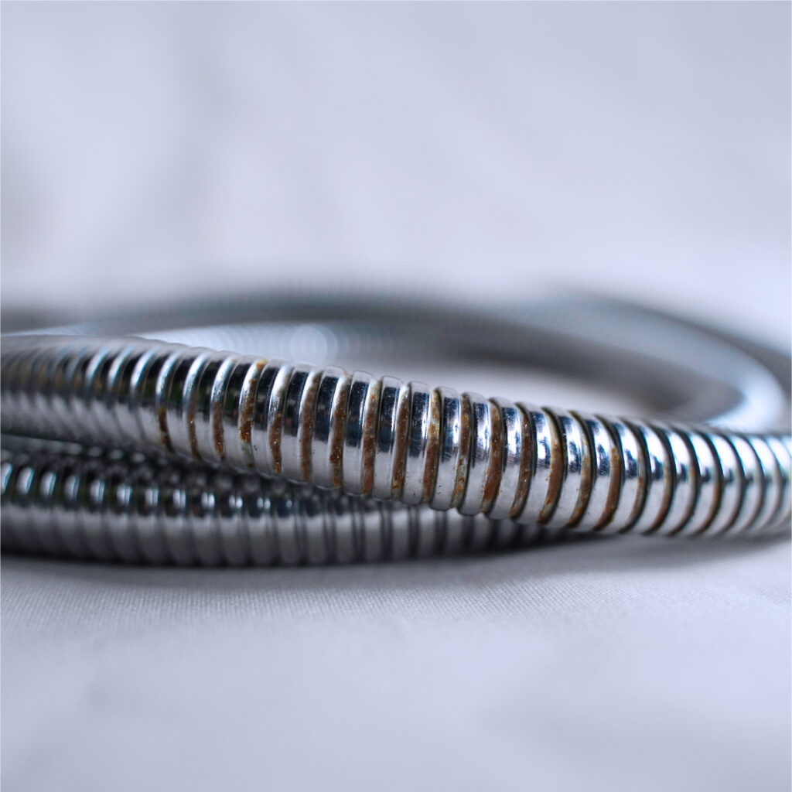
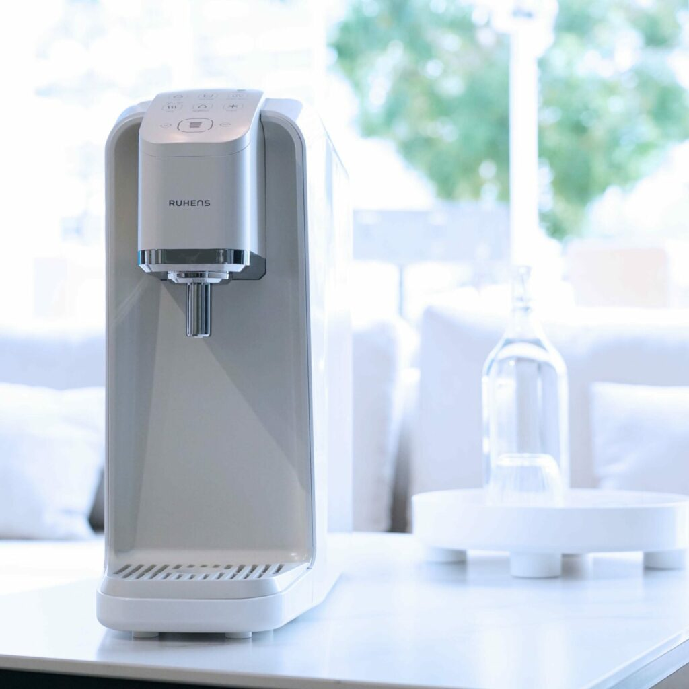
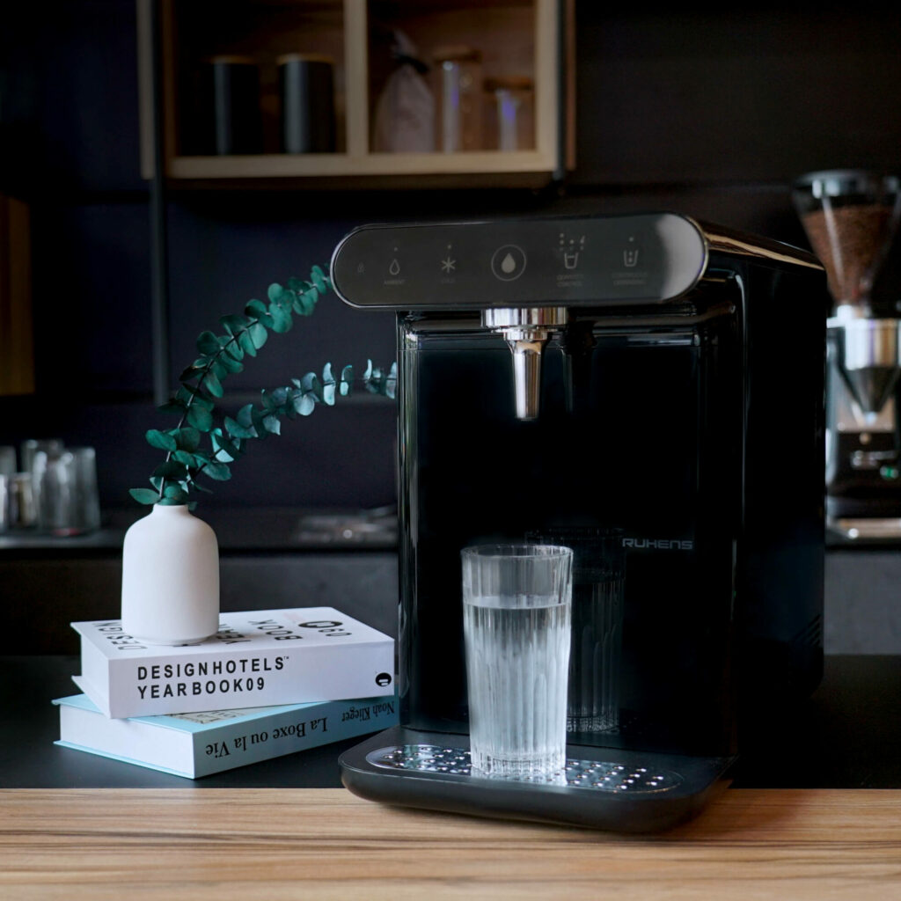
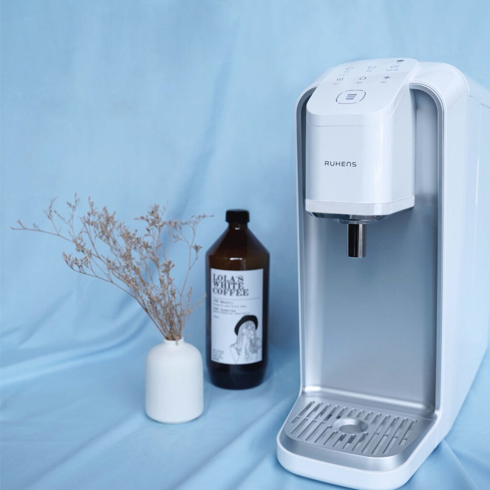
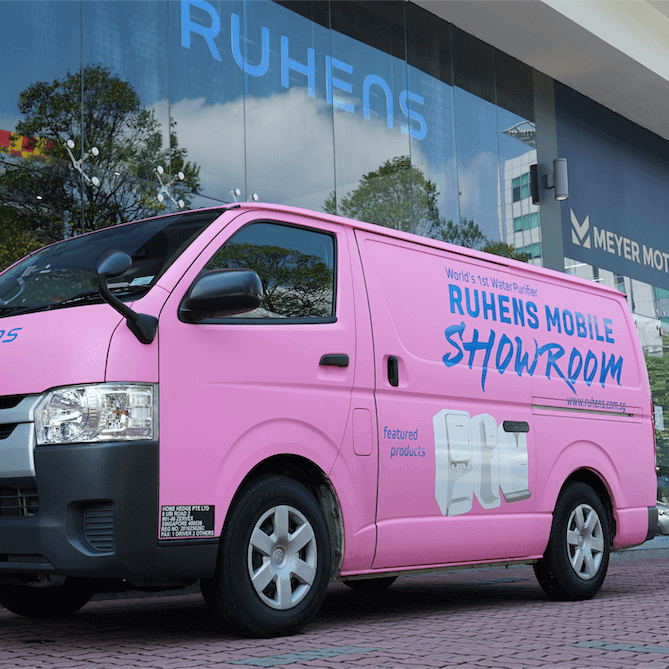
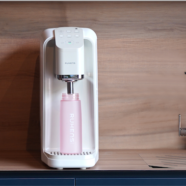
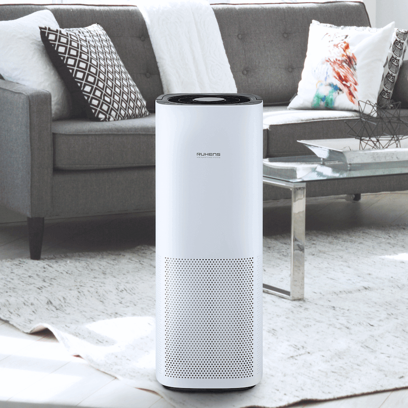

<section class="blog-hero-section">
	<h1>
		welcome to <br />
		ruhens blog
	</h1>
</section>

<section class="container">
	<div class="blog-items">
		<a href="#" class="item">
			
			<span>3 REASONS WHY YOU NEED SCENTED FILTERED SHOWER HEADS</span>
		</a>
		<a href="#" class="item">
			
			<span
				>DOES YOUR SHOWER HOSE LOOK LIKE THIS? NORMAL SHOWER HOSE VS RUHENS ANTI-BACTERIAL
				SHOWER HOSE</span
			>
		</a>
		<a href="#" class="item">
			
			<span>3 TELL-TALE SIGNS IT IS TIME TO CHANGE YOUR WATER PURIFIER'S FILTERS</span>
		</a>
		<a href="#" class="item">
			
			<span>3 REASONS WHY YOU NEED SCENTED FILTERED SHOWER HEADS</span>
		</a>
		<a href="#" class="item">
			
			<span>4 UNCONVENTIONAL USES FOR WATER PURIFIERS</span>
		</a>
		<a href="#" class="item">
			
			<span>4 TIPS TO CHOOSE THE BEST WATER PURIFIER FOR YOUR HOME</span>
		</a>
		<a href="#" class="item">
			
			<span>LAZY TO HEAD OUT? WE BRING THE SHOWROOM TO YOU!</span>
		</a>
		<a href="#" class="item">
			
			<span>7 WAYS TO KEEP YOU AND YOUR HOME HEALTHY</span>
		</a>
		<a href="#" class="item">
			
			<span>5 MYTHS ABOUT AIR PURIFIERS YOU SHOULD STOP BELIEVING</span>
		</a>
	</div>

	<div class="pagination">
		<a href="#" class="active">1</a>
		<a href="#">2</a>
		<a href="#">Next</a>
	</div>
</section>
